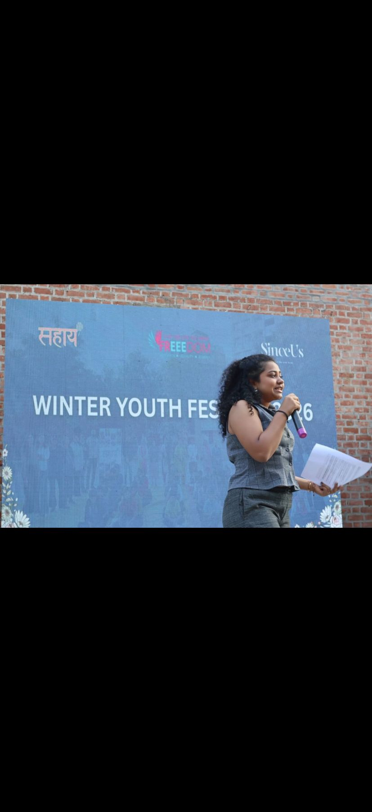
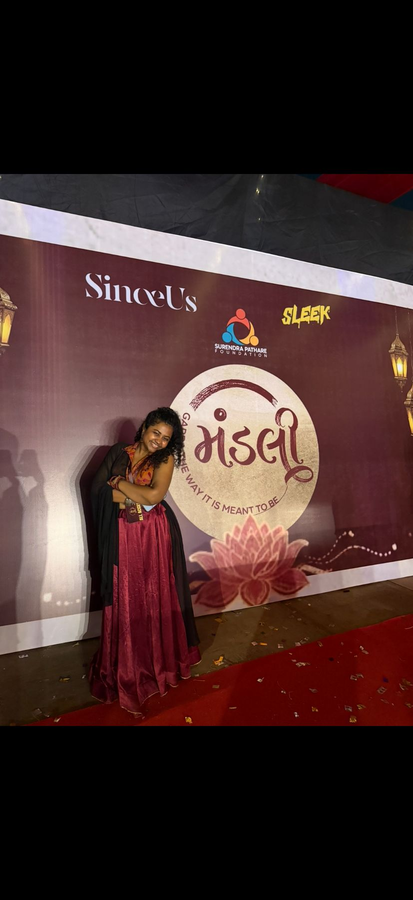
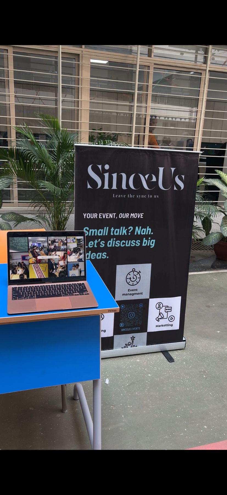
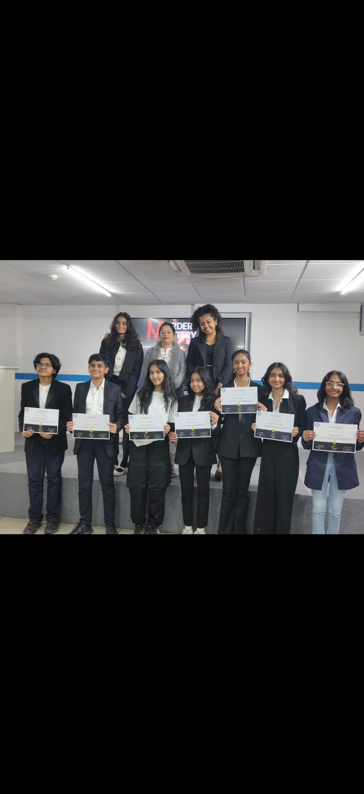
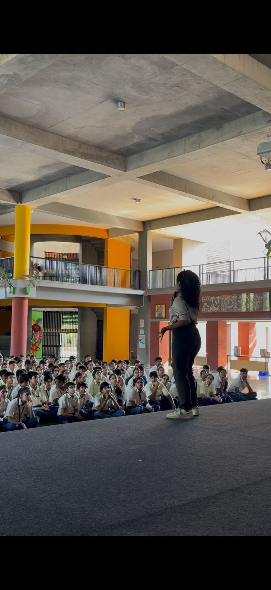
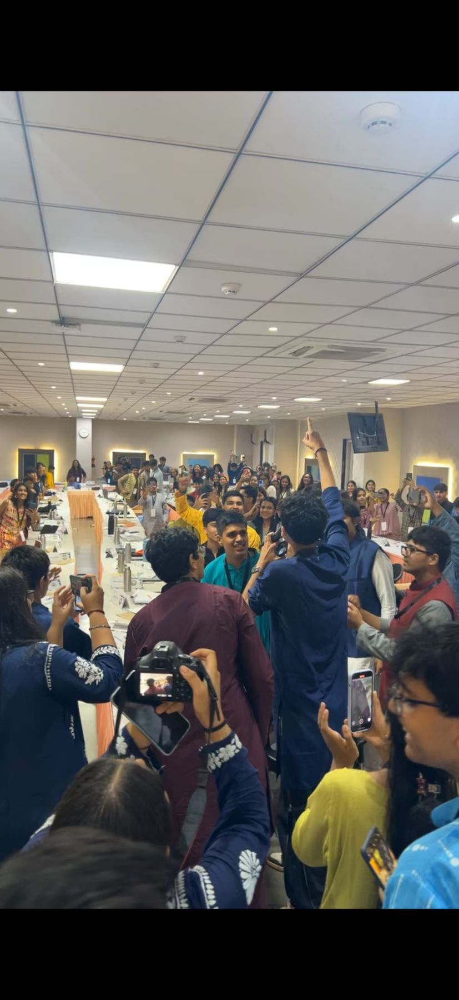
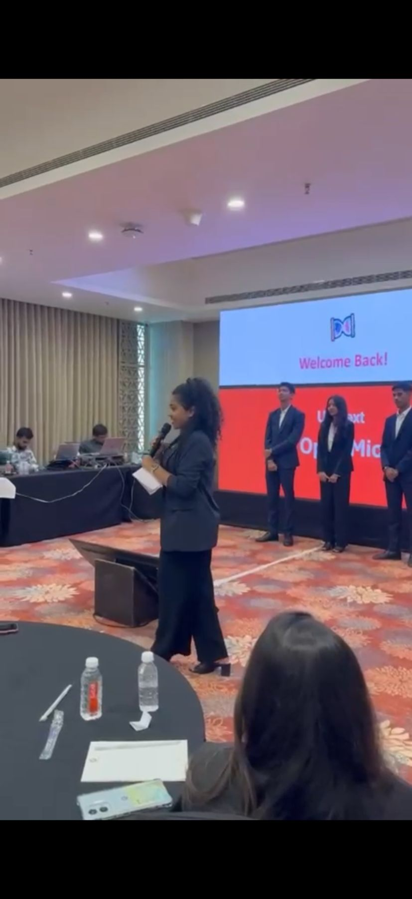
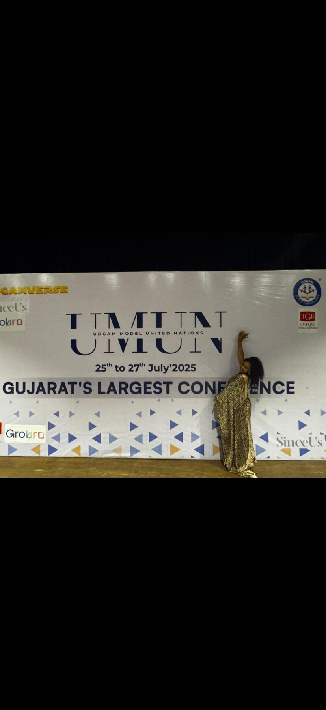
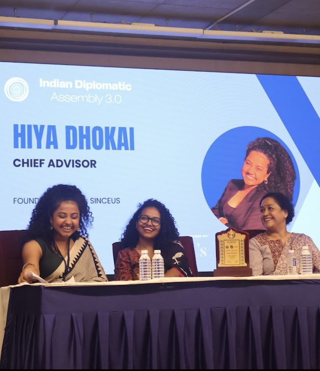

institutions worked with
so, this is the big one.
Built by
doing.
The SinceUs story.
Somewhere between “what if we tried this?” and “okay, doors open in ten,” SinceUs became a whole lot more than an idea.
I'm the Founder & CEO of SinceUs, a youth-led event management brand built around creating experiences that bring people, ideas and communities into the same room.
less talking about it. more making it happen.



A LITTLE PROOF OF THE PLOT
Two years.
A lot of rooms.
participants in the community
years of building, learning and doing
and a camera roll that needs its own hard drive.
01 / THE PEOPLENO ONE BUILDS ALONE

the people behind the plansthe best part?
It's never
just me.
Every event is a team sport. The ideas, late checklists, last-minute fixes and little wins come from people who show up and make things happen together.
SinceUs has also been a platform for young people to take responsibility, try things out and learn by doing.
02 / THE EXECUTIONFROM PLAN TO PEOPLE
There's a lot that
happens before
the doors open.
The final photographs show the room. They don't show the run sheets, the calls, the coordination or the hundred tiny decisions that got everyone there.



03 / THE LITTLE BIG MOMENTSTHE ONES THAT STAY
not everything fits in a metric.
Some things
just stay with you.
Seeing a room fill up. Watching someone step onto a stage. Spotting the brand out in the world. Realising that something you once imagined now has people, energy and a life of its own.
Those are the moments I keep coming back to.


AND WE'RE NOT DONE
This is still
the beginning.
SinceUs keeps growing, changing and finding new rooms to walk into. And I get to keep building it, one ambitious idea at a time.
FOLLOW THE NEXT CHAPTER ↗more stories loading...